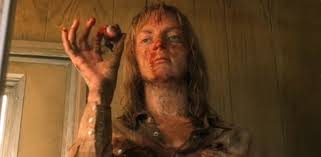

Em Kill Bill, Tarantino nos oferece um conto de vingança à moda dos velhos filmes samurai e de artes marciais de Hong Kong. Neste filme, a figura feminina reina absoluta e, de certo modo, a narrativa de Kill Bill expõe a decadência do homem (como gênero de dominação ancestral) sobre a mulher.
Diretor: Quentin Tarantino
Elenco prncipal: Uma Thurman, David Carradine, Daryl Hannah, Michael Madsen, Lucy Liu, Gordon Liu, Michael Parks e Sonny Chiba
Data de lançamento: 8 de outubro de 2004
Uma breve sinopse: Após ser traída por Bill (David Carradine) e seu antigo grupo, uma mulher (Uma Thurman) fica à beira da morte por 4 anos. Após despertar do coma ela parte em busca de vingança, indo atrás de cada um dos seus antigos companheiros para matá-los.
Vinícius Mendes Porto 2-c
